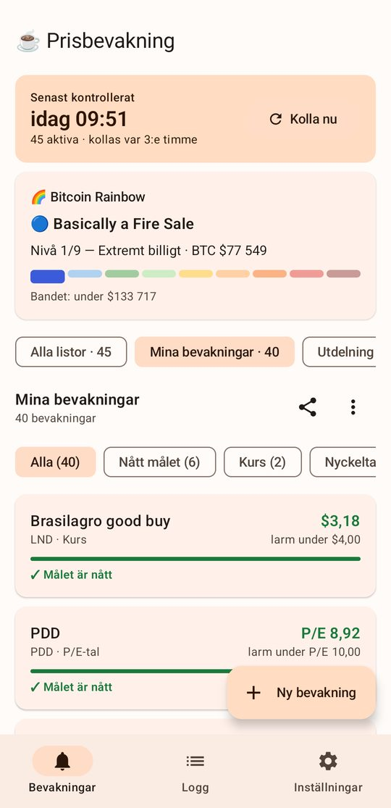

Bevakningar
Ett larm när aktien når ditt pris
Sök upp en aktie eller ett krypto, sätt en gräns och välj om du vill ha notis när värdet går under eller över den. Appen kollar i bakgrunden, som standard var tredje timme, även när den är stängd.
- Flera listor, till exempel "Utdelning" och "Krypto", som går att pausa var för sig.
- Grön stapel och "Målet är nått" när en aktie ligger rätt.
- Bitcoin Rainbow Chart med en daglig status.
